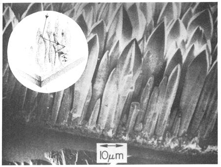

High-temperature solar collectors to date, anyway have suffered from a built in Achilles' heel: Materials capable of absorbing great amounts of sunlight readily are usually just as capable of losing that absorbed energy through the emission of infrared radiation. The very qualities which make a collector surface a good absorber, in other words, also make it a good radiator.
Conversely, materials which do not lose energy readily through emission usually do not absorb it readily either. Tungsten, for instance, has long been regarded as both a poor absorber and a poor emitter of radiation.
Thus, IBM research scientists were understandably surprised a few months ago when they noted that a laboratory-grown tungsten film seemed to act as an unusually good absorber of light. They were even more interested to find that the same tungsten surface appeared to be a very bad emitter of infrared radiation.
Closer examination of the "vapor-deposited" tungsten revealed that the extraordinary film was covered with hundreds of thousands of tiny vertical spear like structures known as dendrites. The little spikes range from 1/2,500th to 1/5,000th
of an inch in diameter and separation between individual dendrites may be as small as 1/50,000th of an inch (which is comparable to the wavelengths of visible light). "Large" dendrites may be as tall as 1/500th of an inch and separated from one another, on the average, by approximately the same distance. Interspersed among these "big ones" is a dense "undergrowth" of smaller dendrites that range downward to as little as 1/2,500th inch in height.
Apparently (as the semi-schematic drawing above shows) rays of light oriented within about 15 degrees of the dendrites' vertical axes can enter this maze quite easily. The rays, however, then have their angles changed by repeated reflection and-once those angles are changed-only about 4% of the trapped light energy is able to escape. Result: The new solar-absorber is able to maintain an operating temperature in the range of 500° C (932° F). Which as any knowledgeable experimenter with high temperature solar collectors can tell you is BIG NEWS.
It's almost a sure bet, then, that we're all going to be hearing more about vapor-deposited tungsten and dendrites in the future.
|
 |
|
|